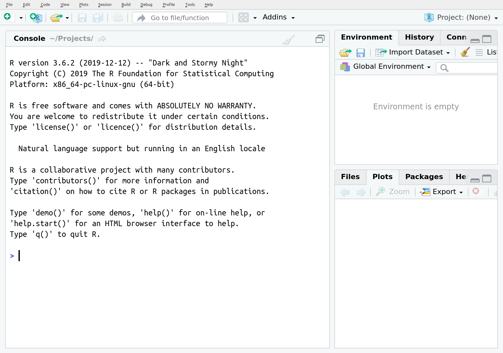

BU 2021 R Workshop
Pre-Workshop Preparation
Welcome! I’m excited for the opportunity to share my love of R with you during this upcoming workshop. This site should give you all the details you need to get you ready to start on Saturday!
Workshop Details
Dates: January 16th to 17th (Saturday and Sunday)
Time: 9am - 5pm (Central)
Location: Zoom
- Meeting ID: 915 8440 4956; Passcode: 057337
- Link: https://brandonu-ca.zoom.us/j/91584404956?pwd=QjFnY090VTZ2THRoUW1TRW4vT2FBdz09
Instructor: Steffi LaZerte (sel@steffilazerte.ca)
Slides and Data: Slides and data for the workshop are available here
You will need a computer and Internet connection
Before the Workshop
We are going to be covering a lot in our R sessions, so to give us a jump start, I’ve compiled some things you should have done before coming:
- Install R (Update R)
- Install RStudio (Update RStudio)
- Install
tidyversepackages (Updatetidyversepackages) - Install a couple of extra packages
IMPORTANT!:
If you have any problems installing the software or packages, please contact me (sel@steffilazerte.ca) BEFORE the start of the workshop so we can sort things out.
1. Install R (Update R)
Even if you already have R installed, please update it, so we’re all working with the same version
Depending on your operating system, you can install R in one of the following ways:
Windows
- Go to the Windows download page: https://cran.r-project.org/bin/windows/base/
- Download and install R for windows (the link at the top)
Mac
- Go to the Mac OS X download page: https://cran.r-project.org/bin/macosx/
- Download and install the version that matches your Mac OS X
Linux: Debian/Ubuntu
- Specific details: https://cran.r-project.org/bin/linux/ubuntu/README.html
- Add one of the CRAN repositories to you apt (otherwise your R will be out of date)
2. Install RStudio
Even if you already have RStudio installed, please update it, so we’re all working with the same version
- For all Operating systems (i.e., Windows, Mac Os, Linux, etc.) go to RStudio’s download page: https://www.rstudio.com/products/rstudio/download/#download
- Download and install the installer that matches your system (i.e. select your link from the top options, not the Zip/Tarball options)
Open RStudio  not R
not R  . RStudio automatically opens R for you in the ‘Console’ pane
. RStudio automatically opens R for you in the ‘Console’ pane
Verify that your version of R by looking at the first line of the console, you should see something like this:

The important line is the first one: R version 4.0.3 (2020-10-10) -- "Bunny-Winnies Freak Out"
3a) Install tidyverse
Packages are extensions or add-ons for R. You will use many different ones over the course of your work with R. tidyverse is name of a collection of newer packages for data management.
In RStudio:
- Click on the ‘Packages’ tab in the lower right hand corner
- Click on the ‘Install’ button right below the tab
- Type ‘tidyverse’ into the ‘Packages’ box, and click on ‘Install’

- This may take a while (you will see lots of download text in red in your console)
- When it’s finished, you should see a message similar this one to in the console (lower left hand pane)
* DONE (tidyverse)
The downloaded source packages are in
‘/tmp/RtmpACWq9S/downloaded_packages’
> - Test that your installation had no problems by typing
library(tidyverse)into the console and hitting enter. You should see something like this (Note: These are messages, not errors!):
library(tidyverse)## ── Attaching packages ─────────────────────────────────────── tidyverse 1.3.0 ──## ✓ ggplot2 3.3.3 ✓ purrr 0.3.4
## ✓ tibble 3.0.6 ✓ dplyr 1.0.4
## ✓ tidyr 1.1.2 ✓ stringr 1.4.0
## ✓ readr 1.4.0 ✓ forcats 0.5.1## ── Conflicts ────────────────────────────────────────── tidyverse_conflicts() ──
## x dplyr::filter() masks stats::filter()
## x dplyr::lag() masks stats::lag()Problems?
- If you already had R/RStudio installed, try removing them both and installing everything from scratch
- If you get an error about a problem installing a specific package, try installing that package invidiually (search for it in the install packages menu)
- Try installing the packages we need by hand:
dplyr,tidyr,readr,ggplot2- Contact Steffi
3b) Update tidyverse
This is only necessary if you have an older version of tidyverse installed.
In RStudio:
- Click on on the ‘Update’ button next to the ‘Install’ button
- Click on ‘Select All’ button
- Click on ‘Install Updates’ button
- Repeat until there are no new updates
4. Install some other packages
We’ll also be using a couple of other packages that are not included in the tidyverse so let’s make sure you have them installed too, either by using the same installation menu as above or the following code:
install.packages(c("palmerpenguins", "skimr", "patchwork", "janitor", "readxl"))Congratulations! Now you’re ready to get into the fun stuff :)